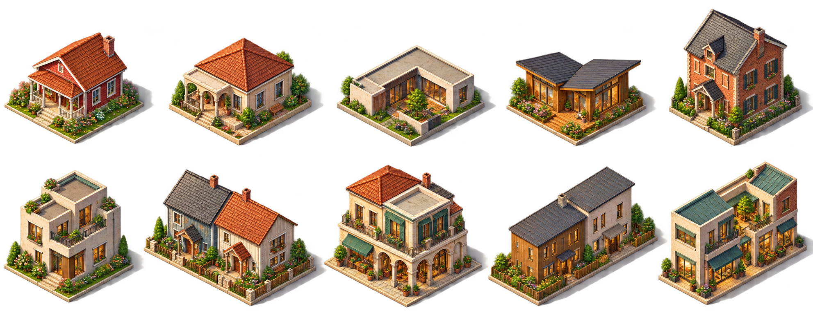

10款原创独立PNG，首轮人工包络标定。共同 W=(48,24)、D=(-48,24)、H=(0,-48)，图像方向校正后等比放置，落点由地面包络决定。虚线是地块，绿框是四向0.1格退让边界。峰值脚点隐藏并推断，比例只是待复核设计值，未接入运行映射。
正在加载本地正式素材…
相同标尺；0为现有自然草地参考，1/2为平房，3/5为低层，10/20/50/100分别借用现有H2/H3/H4。未知仅保留虚线空位，不画零地块。固定建议不随年份或批次变化；这里只画单格，不执行合并/邻域/奇观算法。
墙身为所选可见竖线经同一变换后的参考值；结构峰值为推断估计，不能把候选上限称为精确实测。新低层的峰值命名不等于旧catalog的墙身H1。部分庭院/商住占地较疏，最终视觉尚待审阅。
| 单元 | 占地 | 墙身H参考 | 峰值H估计 | 每侧W/D退让 |
|---|
仅展示造型差异；正式独立素材均单独生成，未从此板裁切。
